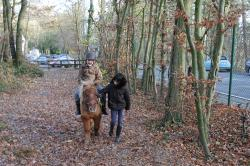

ASBL Ballon d'Oxygène
{kind=link}
Les cours d'équitation adaptés mis sur pied par notre ASBL ont actuellement lieu au Royal Cercle Équestre l'Éperon.
Les infrastructures sont généreusement mises à notre disposition par l'Éperon afin de permette aux élèves de bénéficier de leçons adaptées à des prix avantageux.
Durant les vacances scolaires, nous proposons des stages multi-activités aussi bien pour les enfants et pour les ados et les adultes. N'hésitez pas à nous contactez avant chaque période de vacances afin de savoir ce que nous proposons et de nous faire part de vos besoins.
Notre ASBL peut également mettre sur pied d'autres types d'activités (ex : natation, activités créatives, ...) et ce en fonction de la demande qui nous est adressée. Concrètement, l'objectif premier de l'ASBL Ballon d'Oxygène est de s'adapter au mieux aux besoins des familles.
{kind=link}
N'hésitez donc pas à nous appeler pour que nous puissions voir ensemble ce que notre service peut faire pour vous, et ce, en ce qui concerne chaque type d'accompagnement repris ci-dessous :
- accompagnement à domicile pour un répit régulier
- accompagnement à domicile d'urgence 7/7j et 24/24h
- mise en place d'activités sportives et créatives adaptées
- accompagnement durant vos déplacements à l'étranger ou lors de toute activité particulière au cours de laquelle la personne handicapée a besoin de soutien (sport, séjour à l'hôpital ...).
Contacts et statut
ASBL Ballon d'Oxygène
Avenue des Chèvrefeuilles 95, 4121 Neupré
Email : asblballondoxygene@gmail.com •
Tel : 0477/04.78.46
N° d'entreprise : 0502.298.068.